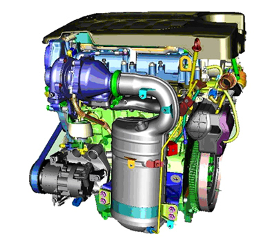
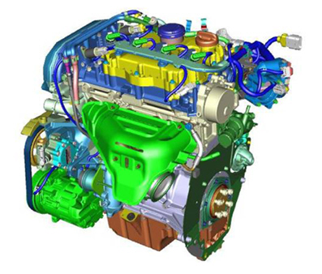
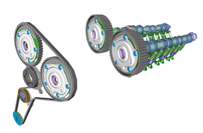
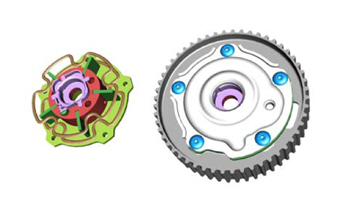
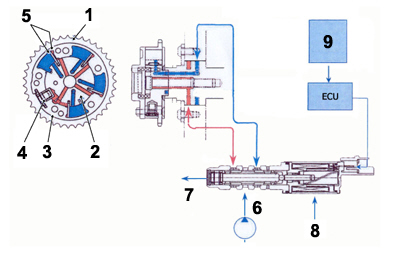
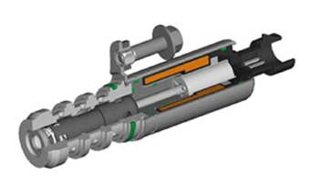

|


|
|
| Service News | ||
|
|
Alfa 159
All types Berlina / Sportwagon |
|
|||
| 0000 0 000 AA |
NEW 1.750TBi and 2.0 JTDM VERSIONS
Main technical data and specifications - Information for the network |
|||

|
The 159 range has been expanded with new versions fitting the following engines:
-2.0 JTDM 170HP (125KW)-1.750TBi (Turbo petrol) 200HP (147KW).The new 2.0 JTDM and 1.750TBi engines are EURO 5 compliant (i.e. they respect the limits of Directive E5). The new version ECO version of the 1.9JTDM 8V presents reduced CO2 emissions.
The servicing frequency for all versions is 35,000 km. The following pages show:
-the identification data of the new versions and data related to all other versions of the range for prompt reference;-the main technical data and specifications for new versions and a description of the main innovative?significant contents of the new engines.Identification data
Engine codes and bodywork versions
|
Version |
Engine type code |
Body version code |
|
1.8 140 HP |
939A4000 |
939AXL1A 21C |
|
1.8 140 HP |
939A4000 |
939BXL1A 22C (4) |
|
1.750TBi (3) |
939B1000 |
939AXN1B 52 (2) |
|
1.750TBi (3) |
939B1000 |
939BXN1B 53 (2) (4) |
|
3.2 JTS 4x2 |
939A000 |
939AXG1B 44 |
|
3.2 JTS 4x2 |
939A000 |
939BXG1B 45 (4) |
|
3.2 JTS 4x4 |
939A000 |
939AXG2B 09B |
|
3.2 JTS 4x4 |
939A000 |
939BXG2B 16B (4) |
|
1.9 JTDM 8v |
939A1000 |
939AXE1B 04C |
|
1.9 JTDM 8v |
939A7000 (1) |
939AXH1B 06D (1) |
|
1.9 JTDM 8v |
939A1000 |
939BXE1B 14C (4) |
|
1.9 JTDM 8v |
939A7000 (1) |
939BXH1B 17D (1) (4) |
|
1.9 JTDM 8v |
939A1000 |
939AXE1B 04D (5) |
|
1.9 JTDM 8v |
939A1000 |
939AXE1B 14D (4) (5) |
|
1.9 JTDM 16v |
939A2000 |
939AXC1B 01C |
|
1.9 JTDM 16v |
939A8000 (1) |
939AXC1B 01D (1) |
|
1.9 JTDM 16v |
939A8000 (1) |
939AXF1B 05C (1) |
|
1.9 JTDM 16v |
939A2000 |
939BXC1B 12E (4) |
|
1.9 JTDM 16v |
939A8000 (1) |
939BXC1B 12F (1) |
|
1.9 JTDM 16v |
939A8000 (1) |
939BXC1B 12C (1) (4) |
|
1.9 JTDM 16v |
939A8000 (1) |
939BXC1B 12D (1) (4) |
|
1.9 JTDM 16v |
939A8000 (1) |
939BXF1B 15 (1) (4) |
|
1.9 JTDM 16v |
939A8000 (1) |
939BXF1B 15C (1) (4) |
|
1.9 JTDM 16v |
939A8000 (1) |
939BXF1B 15E (1) (4) |
|
2.0 JTDM (3) |
939B3000 |
939AXP1B 54 (2) |
|
2.0 JTDM (3) |
939B3000 |
939AXP1B 54B |
|
2.0 JTDM (3) |
939B3000 |
939BXP1B 55 (2) (4) |
|
2.0 JTDM (3) |
939B3000 |
939BXP1B 55B (4) |
|
2.4 JTDM 4x2 |
939A9000 |
939AXM1B 39B |
|
2.4 JTDM4x2 |
939A9000 |
939BXM1B 40B (4) |
|
2.4 JTDM 4x4 |
939A9000 |
939AXM2B 35B |
|
2.4 JTDM 4x4 |
939A9000 |
939BXM2B 36B (4) |
(1) For specific markets
(2) Pack TI
(3) Euro 5 versions
(4) Sportwagon versions
(5) ECO version.
Main specifications
1.750 TBi (Turbo petrol) 200HP
|
Engine marking |
939B1000 |
|
Total displacement |
1742 cm³ |
|
Maximum power EEC |
147kW –200 HP |
|
Corresponding speed |
5000 rpm |
|
Maximum EEC torque |
320Nm (32.6 Kgm) |
|
Corresponding speed |
1400 rpm |
|
Timing |
2 ACT |
|
Fuel feed |
Direct electronic injection with turbo and intercooler |
|
Top speed |
km/h 235 (Berlina) - 233 (Sportwagon) |
2.0JTDM 170HP
|
Engine marking |
939B3000 |
|
Total displacement |
1956 cm³ |
|
Max. EEC power |
125kW –170 HP |
|
Corresponding speed |
4000 rpm |
|
Maximum EEC torque |
360Nm (36.7 Kgm) |
|
Corresponding speed |
1750 rpm |
|
Timing |
2 ACT |
|
Fuel feed |
Direct Multijet injection electronic controlled “Common Rail” |
|
Top speed |
km/h 218 (Berlina) - 216 (Sportwagon) |
Description of the engines
1.9JTDM (ECO version).
The ECO version of the 1.9JTDM (1910 cm³) is the known four cylinder in line, 8 valve engine. It fits direct Common Rail injection and delivers a power of 85/88 kW (115/120 HP) at 4000 rpm according to the market.
The CO2 emissions have been considerably reduced on the ECO version (measured according to Standard 2004/3/CE (g/km) passing from the current 157 to 138 g/km, for Berlina and 159 and to 140 g/km for Sportwagon. These values are obtained at different transmission ratios.
2.0JTDM engine
The new 2.0JTDM engine (Fig. 1) with 170HP of maximum power and 360 Nm of torque at 1750 rpm is the natural evolution of the well-known 1.9 JTDM from the point of view of performance (increased torque and power) and on the level of emissions. The main differences are:
-Increased displacement by increasing bore from 82 mm to 83 mm.-compression ratio decreased from 17.5:1 to 16.5:1 to obtain a considerable decrease in NOx emissions.-New engine configuration with new “low voltage” glow plugs allowing for shorter pre-heating times.-Respect of E5 emission values guaranteed by using a close-coupled type DPF and an evolved exhaust gas recirculation (EGR) system in which all subcomponents are grouped into a single, compact element (EGR module).-Increased performance (due to the increased displacement and the use for a new Garrett variable geometry turbocharger) combined with lower consumptions.Fig. 1

A brief description of the main features of the new engine are given below:
|
Component |
Description |
|
Cylinder head |
Formed by two parts: overhead and aluminium alloy head |
|
Crankcase |
Made of cast iron |
|
Crankshaft |
made of steel with 8 counterweights and 5 supports |
|
Timing |
Two overhead camshafts. V-belt driving exhaust cam belt only and intake shaft driven by a pair of gears Hydraulic tappets and four valves per cylinder Roller fingers |
|
Engine control |
BOSCH EDC 16 C39 engine control system |
|
Air intake |
With variable geometry turbocharger controlled by engine ECU and position sensor on control actuator Air/air heat exchanger (intercooler) The maximum relative feeding pressure is 1.65 bars |
|
Lubrication |
Forced with gear pump, green filter system and oil/engine coolant heat exchanger. |
|
Cooling |
Liquid with forced circulation via centrifugal pump and sealed circuit; radiator and supplementary expansion vessel |
1.750tbi engine (turbo petrol)
The new 1.750TBi (Turbo petrol) (Fig. 2) is a petrol engine with double, continuous variable timing, direct injection and supercharger.
Its main features are:
-four cylinder in-line arrangement;-twin overhead camshaft with 16 valve timing;-direct fuel injection;-double continuous variable timing (suction side and exhaust side);-cylinder head, oil sump and timing cover made of aluminium;-cast-iron crankcase-cylinder liners dry inserted in crankcase;-hydraulic tappets;-coolant pump inside head;-oil filter integrated in crankcase;-belt driven timing with roller fingers;-electronic motorised throttle accelerator;-pistons with negative piston bowl for directing and concentrating the fuel spray to the spark plugs)-connecting rods with fracture-split caps (to ensure correct coupling at assembly)-four coil ignition system with coil on-top of spark plugs-low consumption and emissions (Euro 5);-two lambda sensors;-use of a next-generation turbo charger coupled to an innovative Pulse Converter exhaust (which optimises exhaust pressure pulses to increase torque at low engine speed). Both the manifold and the turbine are made of micro cast steel to withstand very high operating temperatures and thus reduce consumption on motorways at medium-to-high speed.Fig. 2

Engine data
|
displacement |
1742 |
|
bore |
83 mm |
|
stroke |
80.5 mm |
|
compression ratio |
9.5 + 0 -0,5 |
|
dry weight (din 70020a) |
155 kg |
|
max. power (kw - rpm) |
147kw (5000/min) |
|
max. torque (nm - rpm) |
320 nm (1400/min) |
|
idling speed (rpm) |
750 ± 50 |
|
intake valves (open/close) |
-20° before TDC / 66,15° after BDC |
|
exhaust valves (open/close) |
35° before TDC / - 7° after BDC |
Timing system
The distinctive feature of this engine is the new timing system (Fig. 3) which consists of:
-rocker arm system with roller finger and hydraulic tappets which considerably reduces loss by friction;-continuous variable timing on intake and exhaust axis using compartment variable timing system.The variable timing constantly adjusts the timing angles on both lines (suction and exhaust) to maximise performance (by providing the appropriate timing for all engine speeds) and to reduce consumption and emissions at partial loads.
Continuous variable timing of the intake and exhaust valves also allows to:
-the expansion stroke is extended by operating on the exhaust valve (thus converting more heat into work) and providing internal EGR function (thus avoiding the exiting of the last exhaust gases rich in unburnt gases)-the filling of the cylinder with mixture at the various engine speeds is improved by operating on the intake valve.Fig. 3

Variable timing
The continuous variable timing system controls and adjusts the timing diagram according to the various operating conditions in order to optimise engine performance in terms of increased performance, reduction of consumption and emissions, without effecting engine response and handling< in essence, the advantages are not a simple increase of torque and maximum power, but rather an increase of vigorous, full and prompt response at all engine speeds and loads.
These engine fit two variable timing systems, one on each camshaft (Fig. 4). They are capable of varying the cam angle during engine operation according to conditions of engine use. It has two solenoid valves for controlling the oil flow in the actuator components related to the camshafts with respect to the gears operated by the timing belt by the engine ECU.
Fig. 4

The variable timing on suction side provides continuous variation of camshaft slant by even 30°. The variable timing on exhaust side allows a rotation of 26°.
The engine ECU determines the position of the cams by means of the sensors on the camshafts and on the crankshaft and sets the position of the control valves fitted on the overhead which feed the oil flow into the actuator compartments.
The actuator consists of a stator which is turned by the ring gear integral to it and controlled by the timing belt and by a rotor connected directly to the camshaft which may have a relative movement with respect to the stator itself. Rotor and stator are reciprocally offset by the oil flow which crosses the pipes controlled by the solenoid valve operated by the ECU and fills the compartments contained between the internal profiles of the stator and of the rotor themselves (the compartments are coloured in red and blue in figure 5) thus obtaining the rotation in either direction according to the oil distribution operated by the solenoid valve.
Variable timing diagram
Fig. 5

Key
1. Camshaft pulley
2. Rotor
3. Stator
4. Lock pin
5. Compartments
6. Oil feed
7. Oil drain
8. Solenoid valve
9. Sensor input signals
The solenoid valve is formed by a pin slider which is moved in three different directions by the electromagnetic induction of a solenoid. In this manner, each of the two types of variable timing system compartments may be put into communication with the oil feeding pipe and with the exhaust pipe according to the required rotation. Obviously, in order to allow the movement, when one compartment is in communication with one pipe, the other must be in communication with the other pipe or vice versa in order to allow the oil flow. The different positions of the slider create three different solutions:
1) the oil flows into the red compartment and out of the blue compartment to offset the camshaft anticlockwise;
2) the oil flows into the blue compartment and out of the red compartment to offset the camshaft clockwise;
3) the oil present in the two compartments is blocked to hold the relative position between stator and rotor fixed. In this situation, the solenoid valve pin isolates the two compartments of the variable timing system so that they are not in contact either with the feeding pipe or with the oil exhaust.
With the engine idling, both camshafts are in the “default” or “basic” which is maintained by means of the spring. In this situation, the camshafts are all forward and the intake valves are all delayed. In this configuration of the timing system minimum crossover between the intake and exhaust valves is ensured.
When the engine is stopped, the return spring ensure that the lock pin prevents movement of the variable timing device during cranking so as to eliminate noise caused by uncontrolled rotations of the rotor with respect to the stator; a certain pressure must be reached in order to allow the movement of the variable timing system in order to release the variable timing lock pin and overcome the force pulling the return spring back to the basic position.
Variable timing control valves
The proportioning electro hydraulic valves (Fig. 6) are part of the variable timing hydraulic system. Actuation is electromagnetic with return spring. It is provided with a fastening support, assembly screw and 2-pin integrated connector. The connection to the engine ECU is used to move the valve sliders which translate into variable timing system compartment filling to change the variable timing diagram.
Fig. 6

Gearbox
The following transmission is fitted on the new 2.0JTDM 170HP engine:
-F40 with 6 synchronised forward gears plus reverse. The gearbox is used on other models of the group. Ratios are:|
1a |
2a |
3a |
4a |
5a |
6a |
R |
Axle ratio |
|
1:3.917 |
1:2.040 |
1:1.321 |
1:0.954 |
1:0.755 |
1:0.623 |
1:3.750 |
1:3.545 |
The following transmission is fitted on the new 1.750TBi 200HP engine:
-M32 with 6 synchronised forward gears plus reverse. The gearbox is used on other models of the group. Ratios are:|
1a |
2a |
3a |
4a |
5a |
6a |
R |
Axle ratio |
|
1:3.818 |
1:2.158 |
1:1.475 |
1:1.067 |
1:0.875 |
1:0.744 |
1:3.545 |
1:3.941 |
The following transmission is fitted on the 1.9JTDM ECO engine:
-M20 with 6 synchronised forward gears plus reverse. The gearbox is used on other models of the group. Ratios are:|
1a |
2a |
3a |
4a |
5a |
6a |
R |
Axle ratio |
|
1:4.273 |
1:2.158 |
1:1,302 |
1:0.959 |
1:0.744 |
1:0.614 |
1:3.18 |
1:3.350 |
Wheel angle inspection positions
The values shown refer to angles in standard 0 conditions (unladen with spare wheel, tools, accessories, liquids, approximately 8 litres of fuel and tyres inflated at the specified pressure).
|
All types | ||
|
Front wheels |
camber |
- 35'' +/- 18’ (max. left/right difference: 24’) |
|
Front wheels |
caster |
4°17 +/- 18’ (max. left/right difference: 18’) |
|
Front wheels |
semi toe-in |
- 8’ +/- 4’ (max. right/left difference: 4’) |
|
- 1.00mm +/- 0.4 | ||
|
Rear wheels |
camber |
-40 +/- 18’ (max. right/left difference: 24’) |
|
Rear wheels |
semi toe-in |
+ 13’ +/- 3.5’ |
|
+ 1.6mm +/- 0,4 (max. right/left difference: 4’) | ||
Rims - tyres (optional for versions/markets, where provided)
|
1.8 140HP 1.9 JTDM 8v 1.9 JTDM 16v 2.0JTDM |
1.9 JTDM 8v (Eco) 1.9 JTDM 8v (**) |
1.750TBi 3.2JTS 2.4 JTDM 200HP 2.4 JTDM 210HP |
TI outfit | |
|
Optional | ||||
|
Rims |
7Jx16” (a) |
7Jx16” (a) |
7,5Jx17” (L) (*) |
8x19” (L) |
|
Tyres |
205/55R16 91V |
205/55R16 91V |
225/50R17 98W |
235/40ZR19 96Y (+) |
|
For versions/markets where provided | ||||
|
Rims |
7Jx16” (a) 7Jx16” (L) |
7Jx16” (a) 7Jx16” (L) | ||
|
Tyres |
215/55R16 93V |
215/55R16 93V | ||
|
Optional | ||||
|
Rims |
7,5x17” (L) (*) 8x18” (L) |
7,5x17” (L) (*) |
8x18” (L) | |
|
Tyres |
225/50R17 98W 235/45R18 98W |
225/50R17 98W |
235/45R18 98W |
Space-saver spare wheel: rim 4.00BX17” - tyre T125/80R17
(a) Steel rims
(L) Alloy rims
(*) Tyres not suitable for fitting traditional snow chains. Spider type chains only may be used.
(**) For specific markets.
(+) Tyres not suitable for fitting snow chains. Measure certified and allowed for PIRELLI 235/40 ZR19 96Y tyres only. Use 225/50 R17 98 or 235/45 R18 98 winter tyres, if required.
16” rims cannot be fitted on TI version.
 | Spider snow chains only can be used on 225/50 R17” tyres. Snow chains cannot be fitted on 235/45 R18” and 235/40ZR19” tyres (any type) due to interference with the wing; winter tyres with speed index H or higher are recommended |
| Snow chains must be fitted on the front axle on 4x4 versions. |
Cold tyre inflation pressure (in bar)
|
205/55 R16” 91V |
215/55 R16” 93V |
225/50 R17” 98W |
235/45 ZR18” 98W | |||||
|
front |
rear |
front |
rear |
front |
rear |
front |
rear | |
|
Medium load |
2.3 |
2.3 |
2.3 |
2.3 |
2.5 |
2.5 |
2.7 |
2.5 |
|
Full load |
2.6 |
2.6 |
2.5 |
2.5 |
2.9 |
2.7 |
2.9 |
2.7 |
|
235/40 ZR19” 96Y |
Space saver spare wheel T125/80 R 17 | ||
|
front |
rear | ||
|
Medium load |
2.7 |
2.5 |
4.2 |
|
Full load |
3.0 |
2.8 | |